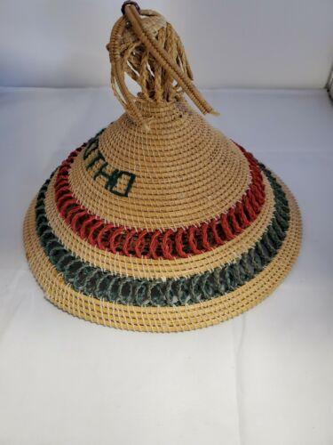
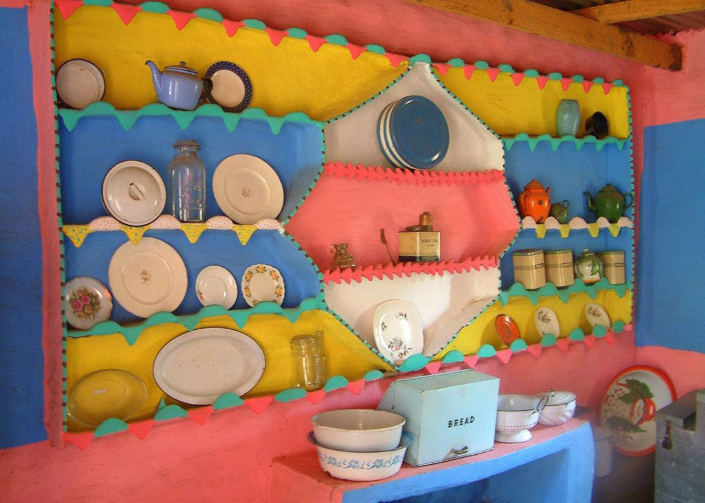
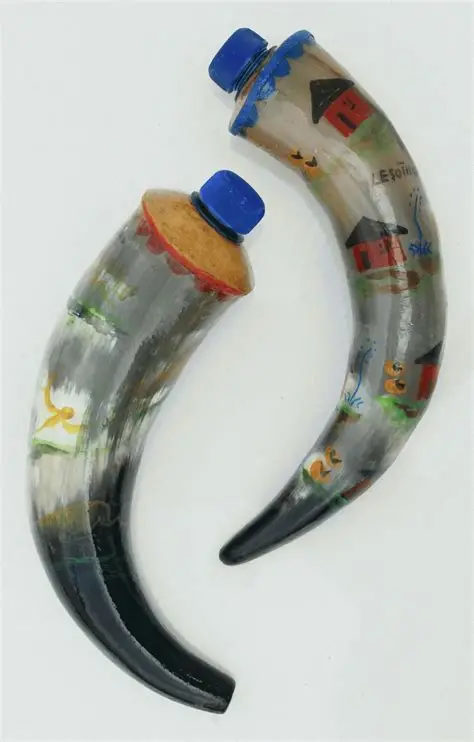

Mokorotlo is a hay-made hat. It shymbolises Qiloane, just like ts'ets'eis wrn in hot days.
Mokorotlo is a hay-made hat. It shymbolises Qiloane, just like ts'ets'eis wrn in hot days.

Raka was made of clay,and is where they used to put cooking utensils.
Raka was made of clay,and is where they used to put cooking utensils.

Is a horn crafted to store milk, it's function is make milk fresh for longer period of time
Is a horn crafted to store milk, it's function is make milk fresh for longer period of time
Moseme is a hay made mat. it is mostly uded by tradinal doctors, hence they thro thier bones on it. Newly wedded wives according to Basotho tradition>

Nkho is clay made craft. It looks more like a bucket, Basotho use it to draw water

Ts'ets'e, is hay-made hat, worn when it's hot or anytime when there sun shine .
Mohope a kitchen utensil made of clay, it's function is to drink any kind of beverages.
Lefisoana is small Basotho bucket. It is wildly used by "Mathuela" to prepare what is called "lefehlo"